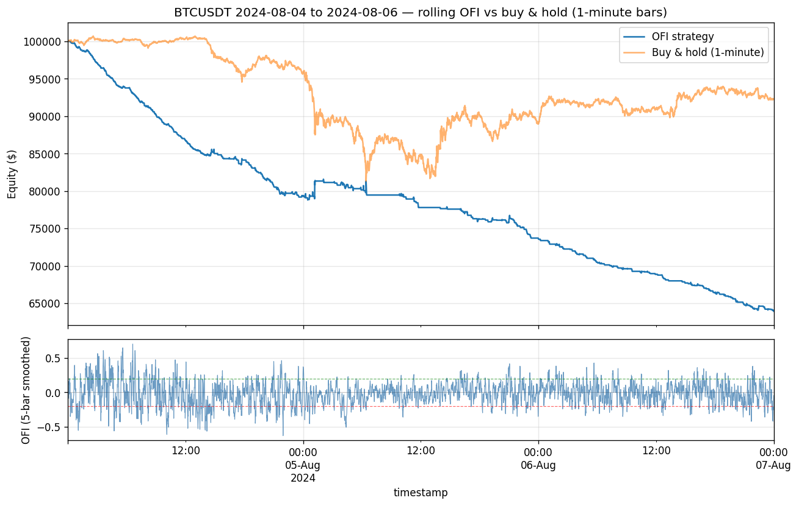

A rigorous negative result: trading with smoothed taker-flow on minute-bar BTCUSDT loses, and why the headline Sharpe is not what it looks like.
Compiled 2026-05-28 · BTCUSDT 1-min bars, 2024-08-04 to 2024-08-06
We test the canonical microstructure continuation hypothesis — that aggressive taker buying creates short-term upward price pressure and aggressive selling pushes price down — on three days of BTCUSDT trade data spanning the 2024-08-05 crash. From roughly 8.7 million Binance aggregated trades we construct 4,320 one-minute bars and a normalized order-flow-imbalance (OFI) feature, signed by the exact aggressor flag rather than an inferred tick rule. A 5-bar trailing average of OFI crossing \(\pm0.20\) drives a long/flat/short position. The strategy loses decisively: a 3-day total return of \(-36\%\), a maximum drawdown of \(-36\%\), and a hit rate of \(29.7\%\) — wrong more than twice as often as right, consistently across pre-crash, crash, and recovery sub-windows. We argue this is not a bad-luck artifact but the expected signature of trading a contemporaneous, fast-decaying price-impact relationship at a stale horizon: by the time a 5-minute average crosses the threshold, the permanent (informational) component of impact is already in the price, leaving the transient (inventory) component to mean-revert against the late entrant. We devote a full section to the methodological question of how to read the reported Sharpe of \(-86.4\): under minute-bar sampling \(P=525{,}600\), so this number is not comparable to the single-digit Sharpes of our daily-bar papers; the scale-invariant comparisons are hit rate and drawdown. We ship the negative result deliberately — a catalogue of only winners is overfit, and this demonstrates the full microstructure pipeline functions end-to-end without manufacturing a positive edge.
Keywords. order-flow imbalance, price impact, Kyle's lambda, market microstructure, taker flow, Sharpe annualization, negative result, cryptocurrency.
The most durable intuition in market microstructure is also the simplest: trades move prices. When a market order lifts the ask, it consumes liquidity and nudges the price up; when it hits the bid, the price ticks down. Aggregate this signed pressure over a window and you obtain an order-flow imbalance, and the folk hypothesis — that flow imbalance predicts the next increment of price — has launched a thousand intraday strategies. This paper subjects that hypothesis to a deliberately clean test and reports that it fails.
We choose cryptocurrency, and Binance specifically, for three reasons. First, Binance publishes aggregated trade data on a public CDN with an exact aggressor flag, so we sign trades without the inference error of the tick rule. Second, BTCUSDT is among the most liquid instruments in existence, which is precisely the regime in which informational impact is incorporated fastest — the adversarial case for a slow continuation signal. Third, we anchor the sample on the violent sell-off of 2024-08-05, bracketing it with the calmer day before and the recovery after. The crash window is not an embarrassment to be excluded; it is a stress test, generating heavy and at times symmetric two-sided flow that probes whether the signal degrades gracefully or catastrophically.
The contribution is threefold. We give a careful account of trade signing and bar aggregation; we develop the price-impact theory (Kyle, Hasbrouck, Glosten–Milgrom) needed to predict — before looking at returns — that the signal should fail; and we treat the annualization of the Sharpe ratio across sampling frequencies as a first-class methodological object, because the headline number is otherwise easy to misread.
The raw input is the BTCUSDT aggregated-trades archive from data.binance.vision for 2024-08-04 through 2024-08-06. Each record carries a price, a quantity, a timestamp, and the boolean is_buyer_maker. Roughly 8.7 million such records are aggregated into 4,320 one-minute bars (three days \(\times\,1{,}440\) minutes).
Trade signing is exact. For trade \(k\) we define the aggressor sign \[ \epsilon_k = \begin{cases} +1 & \text{is\_buyer\_maker} = \text{False} \quad (\text{aggressive buy, taker lifts the ask}),\\[2pt] -1 & \text{is\_buyer\_maker} = \text{True} \quad (\text{aggressive sell, taker hits the bid}). \end{cases} \] The logic is that the maker is the resting limit order; when the buyer is the maker, the seller crossed the spread, hence an aggressive sell. This is the true aggressor label, strictly better than the Lee–Ready (1991) tick-rule inference used when only trades-and-quotes are available and the side must be guessed from the prior price move. Within minute bar \(t\) we accumulate aggressive buy and sell volume, \begin{equation} V^B_t=\!\!\sum_{k\in t,\;\epsilon_k=+1}\!\! q_k, \qquad V^S_t=\!\!\sum_{k\in t,\;\epsilon_k=-1}\!\! q_k, \end{equation} where \(q_k\) is the trade quantity. These two non-negative aggregates are the only microstructure quantities the signal consumes; we deliberately use no Level-2 depth, a limitation we revisit in §8.
The feature is the normalized signed-volume imbalance per bar,
Raw OFI is noisy bar-to-bar; a single large taker print can swing it. We low-pass it with a 5-bar trailing average, \begin{equation} \overline{\mathrm{OFI}}_t=\frac15\sum_{k=0}^{4}\mathrm{OFI}_{t-k}, \end{equation} a finite-impulse-response filter with uniform weights. Its cost is latency: a length-\(L\) moving average has group delay \((L-1)/2\), here \((5-1)/2=2\) minutes. The smoothed signal therefore reports the flow state of, on average, two minutes ago — a fact that will matter a great deal in §8, because the autocorrelation of OFI decays on a seconds-to-minutes timescale, so a two-minute delay is large relative to the horizon the signal purports to predict.
The trading rule is a symmetric threshold on the smoothed feature: \begin{equation} w_t=\begin{cases} +1 & \overline{\mathrm{OFI}}_t>+0.20 \quad(\text{long}),\\ -1 & \overline{\mathrm{OFI}}_t<-0.20 \quad(\text{short}),\\ \phantom{-}0 & \text{otherwise} \quad(\text{flat}). \end{cases} \end{equation} The strategy is stateful: the event-driven engine maintains a five-element rolling OFI buffer and emits \(w_t\) at the close of minute \(t\).
Why should flow predict returns at all, and over what horizon? The foundational result is Kyle (1985): in a market with an informed trader, a competitive market maker, and noise traders, the equilibrium pricing rule is linear in net order flow, \begin{equation} \Delta P_t=\lambda\,\mathrm{OF}_t, \end{equation} where \(\lambda\) — Kyle's lambda — is the price-impact coefficient, the inverse of market depth and a standard measure of illiquidity. The crucial property of \((5)\) for our purposes is that it is contemporaneous: it relates the order flow of period \(t\) to the price change of the same period \(t\). It is an equilibrium identity about how flow and price co-move, not a forecast of \(\Delta P_{t+1}\) from \(\mathrm{OF}_t\). A strategy that observes flow and then trades the next bar is betting on the latter, which \((5)\) does not supply.
Hasbrouck (1991) sharpens this by decomposing the response of price to a trade, via a vector autoregression of signed trades and quote revisions, into two components. The permanent component reflects the information the trade reveals; it is incorporated into the efficient price and persists. The transient component reflects inventory and liquidity effects — the market maker's temporary price concession for absorbing the order — and it mean-reverts as inventory is rebalanced. Continuation, if it exists, lives in the permanent component; reversal lives in the transient one. Cont, Kukanov & Stoikov (2014) close the loop empirically: OFI explains contemporaneous price changes remarkably well (consistent with \((5)\)) but carries little predictive content for future returns once the contemporaneous move has occurred.
The testable continuation claim is therefore the conditional-mean statement \begin{equation} \mathbb{E}\!\left[R_{t+1}\,\middle|\,\overline{\mathrm{OFI}}_t>\theta\right]>0, \qquad \theta=0.20, \end{equation} and the symmetric inequality on the short side. The theory above already predicts that \((6)\) will be hard to satisfy on a liquid venue: the permanent move associated with the imbalance has, by the time a smoothed average crosses \(\theta\), largely already happened.
We use the shared metric battery common to this catalogue; we restate it compactly and flag the one quantity that differs sharply here. Let the simple per-bar return be \(R_t=P_t/P_{t-1}-1\) on minute-close prices, and let \(w_t\in\{-1,0,+1\}\). Execution carries a one-bar lag: a signal formed at the close of minute \(t\) is realized over \(t\to t+1\). The net per-bar return is \begin{equation} r^s_t=w_{t-1}R_t-c\,\lvert w_t-w_{t-1}\rvert, \end{equation} with round-trip cost \(c=7\,\text{bp}=7\times10^{-4}\) per unit of turnover (2 bp commission \(+\) 5 bp slippage). Equity compounds as \(E_t=E_0\prod_{\tau\le t}(1+r^s_\tau)\). The performance statistics are \begin{align} \widehat{SR}&=\frac{\bar r^s}{s}\sqrt{P}, & \mathrm{MDD}&=\max_t\!\left(1-\frac{E_t}{\max_{\tau\le t}E_\tau}\right), & \text{hit}&=\frac{\#\{t:\,w_{t-1}\neq0,\;r^s_t>0\}}{\#\{t:\,w_{t-1}\neq0\}}, \end{align} where \(\bar r^s\) and \(s\) are the sample mean and standard deviation of \(r^s_t\).
The engine is event-driven (tradinglib.backtest.run_event_backtest); the strategy maintains its own five-element rolling OFI buffer, so positions evolve through genuine per-bar stateful logic rather than a vectorized lookahead. Fills are at the minute close — an idealization (no latency, no queue model) that, if anything, flatters the strategy.
Over the three-day window the strategy loses 36% of capital, with the equity curve declining monotonically in expectation across all three sub-regimes. The drawdown equals the total loss because the curve essentially never recovers a prior high: the strategy is not volatile-but-flat, it is steadily wrong.

Performance of the smoothed-OFI strategy, BTCUSDT 1-min bars, 2024-08-04 to 2024-08-06 (4,320 bars).
| Metric | Value | Reading |
|---|---|---|
| Total return (3 days) | −36% | capital lost over the window |
| Maximum drawdown | −36% | peak-to-trough = total loss |
| Hit rate | 29.7% | wrong >2× as often as right |
| Sharpe (\(P=525{,}600\)) | −86.37 | not comparable to daily papers — see §7 |
| Sortino (\(P=525{,}600\)) | −139.99 | downside-only, same caveat |
| Annualized return | −100% | floored; the 3-day figure is the honest one |
| Bars | 4,320 | 3 × 1,440 minutes |
The Sharpe ratio is not invariant to sampling frequency, and the headline \(-86.4\) is a textbook trap. Under the iid approximation in which per-bar returns are independent with constant mean and variance, the per-bar Sharpe scales to an annual figure by the square root of the number of periods, \begin{equation} SR_{\text{ann}}=SR_{\text{bar}}\sqrt{P}. \end{equation} Inverting at minute frequency, with \(\sqrt{525{,}600}=725.0\), \begin{equation} SR_{\text{bar}}=\frac{-86.37}{\sqrt{525{,}600}}=\frac{-86.37}{725.0}\approx-0.1191 \quad\text{per minute-bar.} \end{equation} To place the number on the same axis as the daily-bar papers (\(P=252\)), convert to a daily-equivalent Sharpe: \begin{equation} SR_{\text{daily-eq}}=SR_{\text{ann}}\sqrt{\tfrac{252}{525{,}600}}=-86.37\times0.02190\approx-1.9, \end{equation} equivalently \(SR_{\text{daily-eq}}=SR_{\text{bar}}\sqrt{252}\approx-0.1191\times15.87\approx-1.9\). So the headline \(-86.4\) and the single-digit Sharpes of the daily models are emphatically not the same kind of object: rescaled to a common daily basis the figure is about \(-1.9\). The lesson is that the fair cross-paper comparisons are the scale-invariant metrics — the hit rate (\(29.7\%\)) and the maximum drawdown (\(-36\%\)) — which require no frequency convention.
One honest caveat sharpens rather than softens the conclusion. The \(\sqrt{\cdot}\)-scaling in \((9)\) assumes iid returns, and minute returns are not iid. Microstructure noise — chiefly bid–ask bounce — induces negative first-order autocorrelation in high-frequency returns (Lo & MacKinlay, 1988), which lowers the true multi-period variance relative to the iid benchmark and therefore inflates the magnitude of any \(\sqrt{P}\)-annualized Sharpe. In other words even \(-1.9\) overstates the strength of the signal. But the direction is unambiguous under any plausible variance-ratio correction: the strategy is a clear loser, and no amount of resampling rescues it.
The mechanism is exactly the one the theory of §4 predicts. On a venue as liquid as Binance BTCUSDT, the permanent (informational) component of impact is absorbed within seconds. By the time a 5-bar trailing average of OFI crosses \(\pm0.20\), the corresponding price move is already in the tape; what remains is the transient inventory component, which mean-reverts. A trader who enters on the threshold crossing is systematically buying the local top of a buying impulse and selling the local bottom of a selling impulse — the late, slow trader transacting against better-informed flow, the adverse-selection cost formalized by Glosten & Milgrom (1985). The 2-minute group delay of the smoother \((3)\) compounds this: because OFI autocorrelation decays on a seconds-to-minutes timescale, a signal delayed two minutes is stale relative to the one-bar horizon it is asked to forecast. The \(29.7\%\) hit rate — and its stability across regimes — is the fingerprint of this structural lateness, not of a single anomalous day.
Cost drag amplifies the negative gross edge. Because positions live in \(\{-1,0,+1\}\), a flip from \(+1\) to \(-1\) is two units of turnover, \(2\times7=14\) bp. At minute frequency the smoothed signal crosses the \(\pm0.20\) band frequently, so the turnover penalty \(c\sum_t\lvert w_t-w_{t-1}\rvert\) in \((7)\) is a material subtraction layered on top of an already-losing signal. A profitable signal could perhaps survive this; a losing one is buried by it.
The limitations are several and we state them plainly. (i) The sample is a single three-day window, deliberately centered on a crash — a selection that stress-tests robustness but provides no out-of-sample distribution of daily performance. (ii) Trade-side OFI is an aggressor proxy for true order-book pressure; it uses no Level-2 depth and so cannot see resting liquidity or queue dynamics. (iii) Fills are taken at the next minute-bar's open on entry (close-to-close for held bars), with no latency or slippage-beyond-the-flat-7bp model, an idealization favorable to the strategy. (iv) High serial dependence in minute data means the effective sample size is far below 4,320, so the statistics are less precise than the bar count suggests. Natural extensions follow from each: use raw (unsmoothed) OFI to react faster and shed the group delay; test the contrarian flip, fading rather than following the imbalance, which the transient-reversion story predicts could be the side with an edge; construct Level-2-derived OFI in the manner of Cont, Kukanov & Stoikov (2014) using order-book events rather than trades; and estimate a many-day distribution of daily Sharpe to attach honest error bars.
Why ship a losing model at all? Because a catalogue of only winners is, by construction, overfit — survivorship in one's own research is the most seductive bias there is. This paper demonstrates that the full microstructure pipeline — tick ingestion from a public archive, exact aggressor signing, per-bar feature extraction, an event-driven stateful backtest, and the standardized metric battery — works end-to-end and reports a clean, theory-consistent negative result without manufacturing a positive one. A negative result that the theory predicted in advance is itself a validation of the apparatus.
is_buyer_maker flag identifies which counterparty was the resting maker; the taker is the aggressor, so False (buyer is taker) marks an aggressive buy and True an aggressive sell. This yields the true sign, unlike the Lee–Ready (1991) tick rule which must infer side from the prior price move when only trades and quotes are observed.